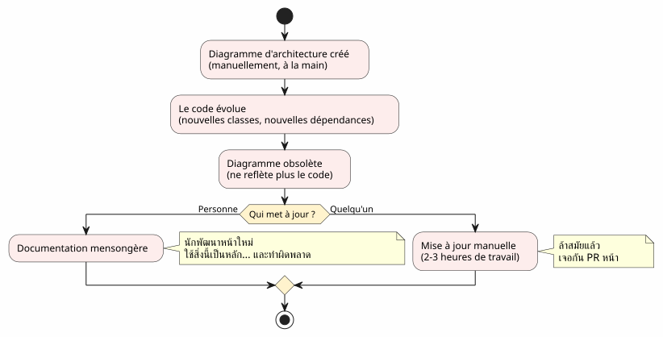
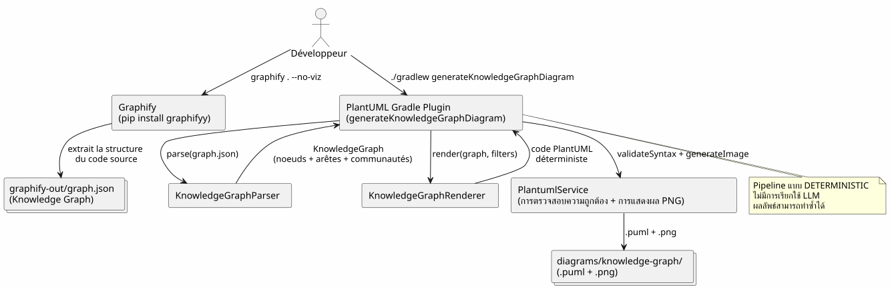
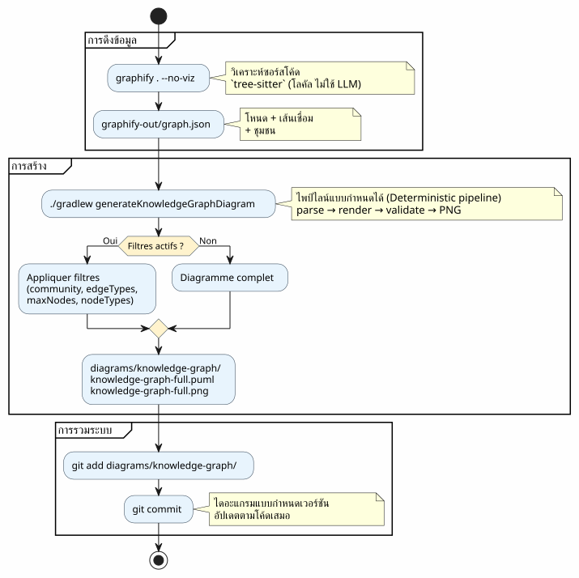
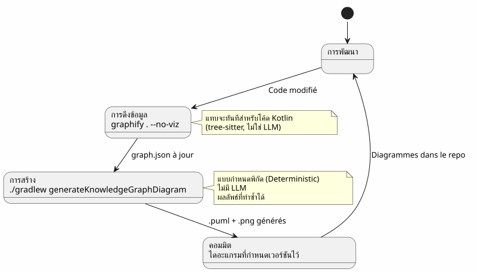
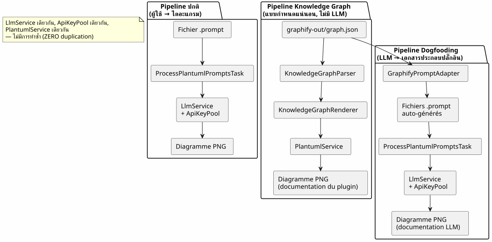
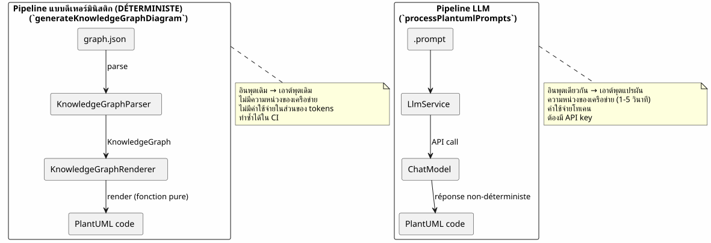
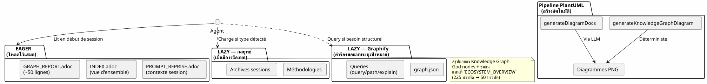
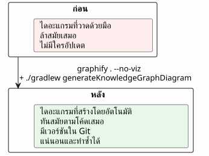

การผสาน Graphify เข้ากับเวิร์กโฟลว์ของ Gradle: จาก Knowledge Graph สู่ไดอะแกรม PlantUML ในคำสั่งเดียว
เผยแพร่เมื่อ 19 April 2026
- ปัญหาคือ: ไดอะแกรมล้าหลังกว่าโค้ดเสมอ
- โซลูชัน: ไปป์ไลน์แบบดีเทอร์มินิสติก (deterministic pipeline) จาก Knowledge Graph → PlantUML
- ขั้นตอนที่ 1: ติดตั้ง Graphify และดึง Knowledge Graph ออกมา
- ขั้นตอนที่ 2: Gradle plugin จะแปลง Knowledge Graph ให้เป็น PlantUML
- ขั้นตอนที่ 3: การใช้งานในชีวิตประจำวัน
- ไพป์ไลน์ที่สมบูรณ์ในเวิร์กโฟลว์ Gradle
- Dogfooding: ปลั๊กอินที่สร้างเอกสารอธิบายการใช้งานด้วยตัวมันเอง
- ทำไมสิ่งนี้ถึงเป็นแบบกำหนดได้ (และทำไมมันถึงสำคัญ)
- แผนภูมิของตัว pipeline เอง
- การบูรณาการเข้ากับการกำกับดูแลโครงการ
- การเตรียมการ (Mise en place): รายการตรวจสอบใน 5 นาที
- กับดักและการบรรเทาผลกระทบ
- สิ่งที่เราได้รับในท้ายที่สุด
- ลิงก์
เวลาในการอ่าน: 12 minutes
Codebase ของคุณกำลังเติบโตขึ้น ความสัมพันธ์ระหว่างโมดูลเพิ่มมากขึ้น เอกสารทางสถาปัตยกรรมกลายเป็นสิ่งที่ล้าสมัยก่อนที่จะเขียนเสร็จเสียอีก จะดีกว่าไหมถ้า build Gradle ของคุณสามารถสร้างไดอะแกรมที่ทันสมัยได้ โดยอัตโนมัติ จากโครงสร้างจริงของโค้ด? และนี่คือสิ่งที่ pipeline Graphify + PlantUML Gradle Plugin ทำได้:`graphify . --no-viz`สกัด Knowledge Graph,`./gradlew generateKnowledgeGraphDiagram`เปลี่ยนให้เป็นไดอะแกรม PlantUML ไม่ใช้ LLM ไม่ใช้การทำด้วยมือ และมีความแน่นอน 100%
- สารบัญ
-
[]
ปัญหาคือ: ไดอะแกรมล้าหลังกว่าโค้ดเสมอ
ทุกโปรเจกต์ที่มีจำนวนบรรทัดเกินกว่าไม่กี่พันบรรทัดมักจะประสบกับอาการนี้:
-
เราวาดแผนผังโครงสร้างสถาปัตยกรรมในช่วงเริ่มต้นของโครงการ
-
โค้ดมีการพัฒนา สิ่งที่ต้องพึ่งพามีการเปลี่ยนแปลง
-
แผนภาพกลายเป็นคำลวงที่ถูกตกแต่งให้สวยงาม
-
ไม่มีใครอัปเดตมันเพราะว่ามันน่าเบื่อ
-
ผู้มาใหม่ใช้สิ่งนี้เป็นเกณฑ์และทำผิดพลาด

คำถามไม่ใช่ว่า ต้องมีแผนภูมิหรือไม่? — เพราะทุกคนรู้ดีว่าต้องมี คำถามคือ:ใครเป็นผู้ดูแลให้ข้อมูลเหล่านี้เป็นปัจจุบัน?
คำตอบคือ: ไม่มีใครเลย นอกจากว่าจะเป็นระบบอัตโนมัติ
โซลูชัน: ไปป์ไลน์แบบดีเทอร์มินิสติก (deterministic pipeline) จาก Knowledge Graph → PlantUML
หลักการนั้นง่ายมาก: แทนที่จะวาดไดอะแกรมด้วยมือ เราจะ…สร้างขึ้นจากโครงสร้างจริงของโค้ดโปรดระบุข้อความที่ต้องการให้แปลครับ

คำสั่งสองคำสั่ง เท่านั้นเอง
# Étape 1 : extraire le Knowledge Graph
graphify . --no-viz
# Étape 2 : générer les diagrammes PlantUML
./gradlew generateKnowledgeGraphDiagramผลลัพธ์ที่ได้คืออะไร? ไฟล์ต่างๆ`.puml` et .png`ใน`diagrams/knowledge-graph/, ซึ่งมีการควบคุมเวอร์ชันด้วย Git และเป็นปัจจุบันตามโค้ดเสมอ
ขั้นตอนที่ 1: ติดตั้ง Graphify และดึง Knowledge Graph ออกมา
การติดตั้ง
Graphify คือเครื่องมือ Python ที่วิเคราะห์ codebase ของคุณและสร้างกราฟความรู้ที่มีโครงสร้าง:
# Méthode recommandée
uv tool install graphifyy && graphify install --platform opencode
# Alternative avec pip
pip install graphifyy && graphify install --platform opencodeตั้งค่าการยกเว้น
สร้างไฟล์`.graphifyignore`ที่รากของโปรเจกต์ เพื่อยกเว้นไฟล์ที่ไม่ได้เป็นส่วนหนึ่งของ business logic:
# Secrets — JAMAIS dans le graphe
*-context.yml
*.env
# Fichiers générés
build/
.gradle/
# Tests fonctionnels
src/functionalTest/ดึง Knowledge Graph ออกมา
graphify . --no-vizแฟล็ก`--no-viz`ข้ามการสร้าง HTML (ไม่จำเป็นใน pipeline ของ Gradle) ผลลัพธ์ที่ได้คือไฟล์`graphify-out/graph.json`ซึ่งประกอบด้วย :
-
โหนด: คลาส, ฟังก์ชัน, ไฟล์ — พร้อมด้วยประเภทและคอมมูนิตี้
-
ขอบ: ความสัมพันธ์ระหว่างโหนด (
EXTRACTEDจากโค้ด,INFERREDโดย LLM) -
ชุมชน: การจัดกลุ่มโหนดที่เชื่อมโยงกันโดยอัตโนมัติ
{
"nodes": [
{"id": "0", "label": "LlmService", "file_type": "code", "community": 0},
{"id": "1", "label": "ApiKeyPool", "file_type": "code", "community": 0},
{"id": "2", "label": "PlantumlService", "file_type": "code", "community": 1}
],
"links": [
{"source": "1", "target": "0", "relation": "uses", "confidence": "EXTRACTED", "weight": 0.9},
{"source": "0", "target": "2", "relation": "calls", "confidence": "INFERRED", "weight": 0.7}
]
}|
ซอร์สโค้ด ( |
ขั้นตอนที่ 2: Gradle plugin จะแปลง Knowledge Graph ให้เป็น PlantUML
สถาปัตยกรรมของ pipeline
ปลั๊กอิน`com.cheroliv.plantuml`รวมงานหนึ่งงาน`generateKnowledgeGraphDiagram`ซึ่งแปลง`graph.json`เป็นไดอะแกรม PlantUML ในรูปแบบกำหนดการแบบเด็ดขาดโดยสมบูรณ์โปรดระบุข้อความที่คุณต้องการให้แปลครับ

ส่วนประกอบภายใน
| ส่วนประกอบ | บทบาท |
|---|---|
|
วิเคราะห์ (Parse) |
|
แปลง…อย่างกำหนดได้หนึ่ง`KnowledgeGraph`เป็นโค้ด PlantUML กลุ่มตามประเภท, ชุมชนใน packages, คำอธิบายสัญลักษณ์อัตโนมัติ |
|
Gradle Task ที่ทำหน้าที่ประสานงาน: parse → render → validate → PNG สามารถกำหนดค่าได้ผ่าน Gradle properties |
|
โมเดลข้อมูล:`KnowledgeGraph`, |
|
การตรวจสอบไวยากรณ์ + การเรนเดอร์ PNG (นำกลับมาใช้ใหม่โดยทุกงานของปลั๊กอิน) |
กฎการแสดงผล
ตัวเรนเดอร์ใช้ข้อกำหนดทางทัศนศิลป์แบบดีเทอร์มินิสติก (deterministic visual conventions):
| ประเภทของขอบ | สัญลักษณ์ PlantUML | ความหมาย |
|---|---|---|
สกัดแล้ว |
|
ความสัมพันธ์ที่สกัดจากซอร์สโค้ด (ความมั่นใจ) |
อนุมานได้ |
|
ความสัมพันธ์ที่อนุมานโดย LLM (คะแนนความเชื่อมั่น) |
กำกวม |
|
ความสัมพันธ์คลุมเครือ (ต้องตรวจสอบ) |
คอมมูนิตี้จะถูกแสดงผลเป็นแพ็กเกจ PlantUML พร้อมจานสีอัตโนมัติ
ขั้นตอนที่ 3: การใช้งานในชีวิตประจำวัน
แผนภาพฉบับสมบูรณ์
# Générer le diagramme du Knowledge Graph complet
./gradlew generateKnowledgeGraphDiagramเอาต์พุต:`diagrams/knowledge-graph/knowledge-graph-full.puml`+.png
กรองตามชุมชน
# Une seule communauté
./gradlew generateKnowledgeGraphDiagram \
-Pplantuml.kg.community=community_0
# Limiter le nombre de noeuds (lisibilité)
./gradlew generateKnowledgeGraphDiagram \
-Pplantuml.kg.community=community_0 \
-Pplantuml.kg.maxNodes=15กรองตามประเภทของขอบ
# Uniquement les relations certaines (EXTRACTED)
./gradlew generateKnowledgeGraphDiagram \
-Pplantuml.kg.edgeTypes=EXTRACTED
# Relations certaines + inférées
./gradlew generateKnowledgeGraphDiagram \
-Pplantuml.kg.edgeTypes=EXTRACTED,INFERREDกรองตามประเภทโหนดและความเชื่อมั่น
# Uniquement les classes de code
./gradlew generateKnowledgeGraphDiagram \
-Pplantuml.kg.nodeTypes=code
# Seuil de confiance minimum (pour les INFERRED)
./gradlew generateKnowledgeGraphDiagram \
-Pplantuml.kg.minConfidence=0.7ไดเรกทอรีเอาต์พุตที่กำหนดเอง
./gradlew generateKnowledgeGraphDiagram \
-Pplantuml.kg.outputDir=docs/architectureข้อมูลอ้างอิงคุณสมบัติแบบสมบูรณ์
| คุณสมบัติ | ค่าเริ่มต้น | คำอธิบาย |
|---|---|---|
|
(ทั้งหมด) |
กรองชุมชนตามชื่อ (การจับคู่ส่วนย่อยของข้อความ) |
|
(ทั้งหมด) |
ประเภทของขอบที่คั่นด้วยเครื่องหมายจุลภาค:`EXTRACTED`, |
|
|
เกณฑ์ความเชื่อมั่นขั้นต่ำสำหรับเส้นเชื่อม (edges) |
|
(ไม่จำกัด) |
จำนวนโหนดสูงสุดที่จะแสดง |
|
(ทั้งหมด) |
ประเภทของโหนดคั่นด้วยเครื่องหมายจุลภาค (เช่น`class`, |
|
|
ไดเรกทอรีเอาต์พุตสำหรับไฟล์`.puml` et |
ไพป์ไลน์ที่สมบูรณ์ในเวิร์กโฟลว์ Gradle
ประเภทเวิร์กโฟลว์

การบูรณาการเข้ากับวงจรการพัฒนา
Pipeline นี้ผสมผสานเข้ากับขั้นตอนหลักของการพัฒนาได้อย่างลงตัว:

การอัปเดตแบบส่วนเพิ่ม
เมื่อโค้ดเปลี่ยน เราจะไม่สร้างกราฟทั้งหมดขึ้นมาใหม่ตั้งแต่ศูนย์:
# Mise à jour incrémentale (fichiers modifiés uniquement)
graphify . --update
# Puis régénérer les diagrammes
./gradlew generateKnowledgeGraphDiagram|
|
Dogfooding: ปลั๊กอินที่สร้างเอกสารอธิบายการใช้งานด้วยตัวมันเอง
มีปลั๊กอิน PlantUML สำหรับเปลี่ยนพรอมต์ให้เป็นไดอะแกรม นอกจากนี้ยังสามารถเปลี่ยน Knowledge Graph ของ codebase ของ ตัวมันเอง ให้เป็นไดอะแกรมสำหรับเอกสารประกอบได้ ซึ่งถือเป็นการ dogfooding : ตัวปลั๊กอินใช้งานบริการของตัวเอง

งาน Gradle ที่เกี่ยวข้อง:
| งาน | LLM ? | คำอธิบาย |
|---|---|---|
|
ไม่ใช่ |
แปลงค่า`graph.json`ใน PlantUML (แบบกำหนดผลลัพธ์ได้) |
|
ใช่ |
สร้าง`.prompt`จากกราฟ แล้วนำไปประมวลผลผ่าน LLM ( |
# Documentation déterministe (rapide, pas de LLM)
./gradlew generateKnowledgeGraphDiagram
# Documentation LLM (plus riche, consomme des tokens)
./gradlew generateDiagramDocsทำไมสิ่งนี้ถึงเป็นแบบกำหนดได้ (และทำไมมันถึงสำคัญ)
จุดสำคัญของ pipeline`generateKnowledgeGraphDiagram`โปรดระบุข้อความที่ต้องการแปลครับมันไม่ได้เรียกใช้ LLM ใดๆ. การแปลงสภาพ`graph.json`→ PlantUML เป็นฟังก์ชันบริสุทธิ์ (pure function)

ประโยชน์ที่เป็นรูปธรรม:
| ข้อได้เปรียบ | ผลกระทบ |
|---|---|
ความสามารถในการทำซ้ำได้ |
แม้แต่`graph.json`→ ไดอะแกรมเดียวกัน เป๊ะเลย ทุกครั้ง |
ไม่มีค่าใช้จ่าย |
ไม่มีการเรียก LLM = ไม่มีโทเคน = ไม่มีใบแจ้งหนี้ API |
ความหน่วงเป็นศูนย์ |
Parse + render ใช้เวลาประมาณ |
CI ที่เข้ากันได้ |
ไม่ต้องใช้ API key ไม่เกิด flaky test จากการตอบสนองของ LLM ที่ไม่แน่นอน |
สามารถกำหนดเวอร์ชันได้ |
Le |
แผนภูมิของตัว pipeline เอง
เพื่อให้ครบถ้วนสมบูรณ์ นี่คือแผนภาพของ pipeline ตามที่ปลั๊กอินจะสร้างขึ้น:

การบูรณาการเข้ากับการกำกับดูแลโครงการ
ในโปรเจกต์ของเรา pipeline นี้จะรวมเข้ากับกลยุทธ์การจัดการบริบทแบบ EAGER/LAZY สำหรับเอเจนท์ AI โดย Knowledge Graph จะเข้ามาแทนที่เอกสารสถาปัตยกรรมแบบเขียนมือด้วยกราฟที่มีโครงสร้าง สามารถ query ได้ และอัปเดตตัวเองโดยอัตโนมัติ

การผสานกันของทั้งสองระบบนั้นส่งเสริมกันและกัน:
-
กลยุทธ์จัดการเรื่อง เมื่อไหร่ และ อย่างไร— ธรรมาภิบาล, เวิร์กโฟลว์, การจัดเก็บเอกสาร
-
Graphify จัดการสิ่งที่ว่าคือ
QUOIและอยู่ที่ `OÙ— โครงสร้างของโค้ด, ความสัมพันธ์, คำสั่งคิวรีที่เจาะจง
โปรดระบุข้อความภาษาฝรั่งเศสที่คุณต้องการให้แปลครับ กลยุทธ์ของเซสชันจะจัดการกับเมื่อใด et le ความคิดเห็น(ธรรมาภิบาล, เวิร์กโฟลว์, เกณฑ์), Graphify จัดการการอะไร et le ที่ไหน(โครงสร้างของโค้ด, ความสัมพันธ์, คำสั่งคิวรีที่เจาะจง) โดยที่ PlantUML pipeline จะจัดการกับด้วยอะไร(ไดอะแกรมแบบ deterministic, มีการกำหนดเวอร์ชัน และเป็นปัจจุบันเสมอ) โปรดระบุข้อความที่ต้องการให้แปลครับ
การเตรียมการ (Mise en place): รายการตรวจสอบใน 5 นาที
| # | ขั้นตอน | คำสั่ง |
|---|---|---|
1 |
ติดตั้ง Graphify |
|
2 |
กำหนดค่าการยกเว้น |
สร้าง`.graphifyignore` |
3 |
ดึงข้อมูล Knowledge Graph |
|
4 |
สร้างไดอะแกรม |
|
5 |
Commit ผลลัพธ์ |
|
# Script complet en 5 commandes
uv tool install graphifyy
cat > .graphifyignore << 'EOF'
*-context.yml
*.env
build/
.gradle/
EOF
graphify . --no-viz
./gradlew generateKnowledgeGraphDiagram
git add graphify-out/GRAPH_REPORT.adoc graphify-out/graph.json diagrams/knowledge-graph/กับดักและการบรรเทาผลกระทบ
| กับดัก | คำอธิบาย | การบรรเทาผลกระทบ |
|---|---|---|
กราฟหนาแน่นเกินไป |
โปรเจกต์ขนาดใหญ่สร้างโหนดที่อ่านไม่ออกจำนวนหลายร้อยโหนด |
ใช้งาน`-Pplantuml.kg.maxNodes=30`และกรองตามชุมชน |
การยกเว้นที่กว้างเกินไป |
มีไฟล์มากเกินไปใน`.graphifyignore`ลดค่าของกราฟ |
เริ่มต้นด้วยการยกเว้นเฉพาะ |
ทิศทางของลูกศร |
ขอบ INFERRED อาจมีทิศทางที่กำกวม |
กรองโดย`-Pplantuml.kg.edgeTypes=EXTRACTED`สำหรับความสัมพันธ์ที่แน่นอนเท่านั้น |
ตัวอักขระที่เลิกใช้แล้ว |
โค้ดเปลี่ยนแต่กราฟไม่ได้ถูกสร้างใหม่ |
ใช้งาน`graphify . --update`เป็นประจำ หรือ git hook`graphify hook install` |
ราคาที่อัปเดตแล้ว |
การอัปเดตแบบเพิ่มส่วน (incremental updates) แทบจะไม่มีค่าใช้จ่าย (tree-sitter local) |
เฉพาะเอกสาร ( |
สิ่งที่เราได้รับในท้ายที่สุด

ประโยชน์ที่เป็นรูปธรรม:
| กำไร | รายละเอียด |
|---|---|
เอกสารที่ทันสมัยอยู่เสมอ |
ไดอะแกรมสะท้อนถึงโค้ดปัจจุบัน ไม่ใช่ snapshot ด้วยตนเอง |
ไม่ต้องดูแลรักษาเลย |
ไดอะแกรมจะถูกสร้างใหม่ทุกครั้งที่มีการ build |
การลดหนี้ทางเทคนิค |
ไม่ต้องคอยดูแลรักษาไดอะแกรมด้วยตนเองอีกต่อไป |
บริบททางภาพสำหรับผู้เริ่มต้น |
นักพัฒนาคนใหม่ทำความเข้าใจสถาปัตยกรรมได้โดยการดูไดอะแกรม |
ศักยภาพในการทำ Fine-tuning |
คู่ (sub-graph → diagram) คือตัวอย่างสำหรับการฝึกสอน AI |
การตรวจสอบความถูกต้องอัตโนมัติ |
`PlantumlService.validateSyntax()`ตรวจสอบทุกไดอะแกรมที่สร้างขึ้น |
การเริ่มต้นใช้งานอย่างรวดเร็ว |
5 ไดอะแกรม = มุมมองสถาปัตยกรรมแบบครบถ้วน |
โปรดระบุข้อความภาษาฝรั่งเศสที่คุณต้องการให้แปลครับ ผู้ที่มี เหตุผลว่าทำไม ย่อมสามารถทนต่อ วิธีการอย่างไร ได้ทุกรูปแบบ โปรดระบุข้อความที่คุณต้องการให้แปลครับ
เหตุผล (le pourquoi) : เพื่อให้ไดอะแกรมเป็นปัจจุบันอยู่เสมอ วิธีการ (le comment) : คำสั่งสองคำสั่งใน Gradle pipeline
ลิงก์
-
เคล็ดลับสุดยอดของคำสั่ง `fg— บทความก่อนหน้าเกี่ยวกับ workflow terminal